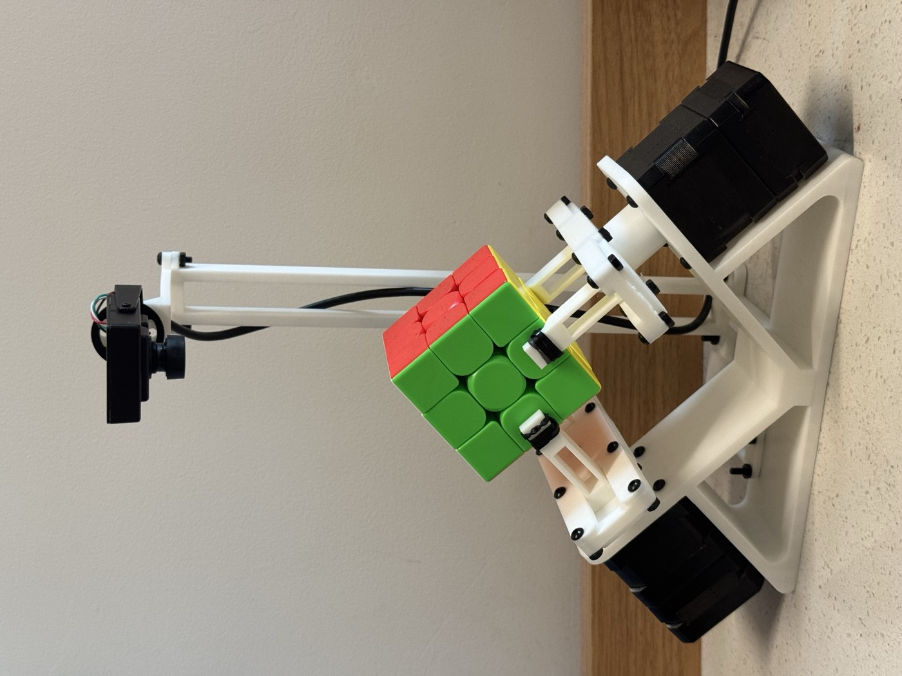
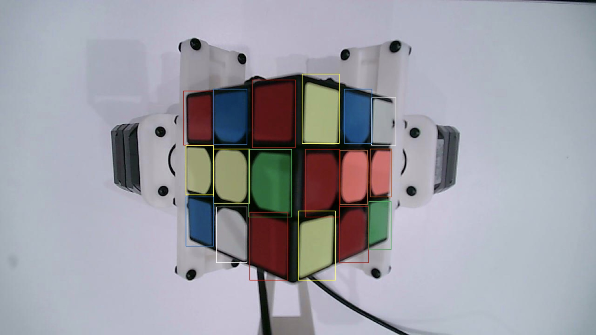
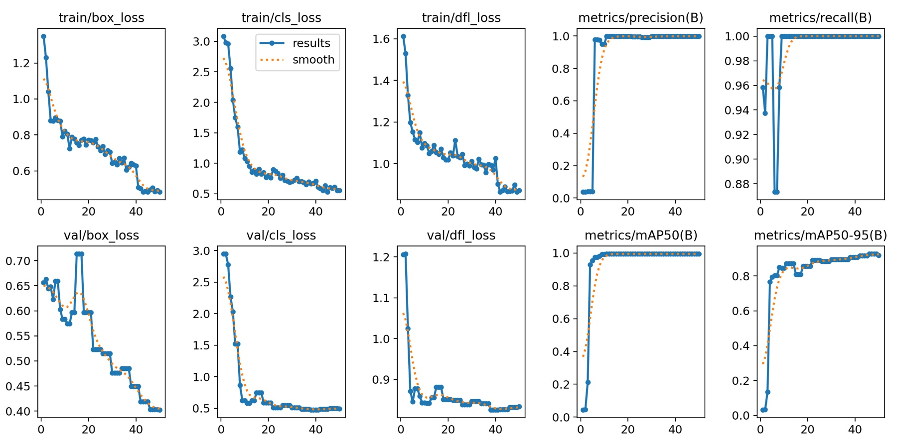
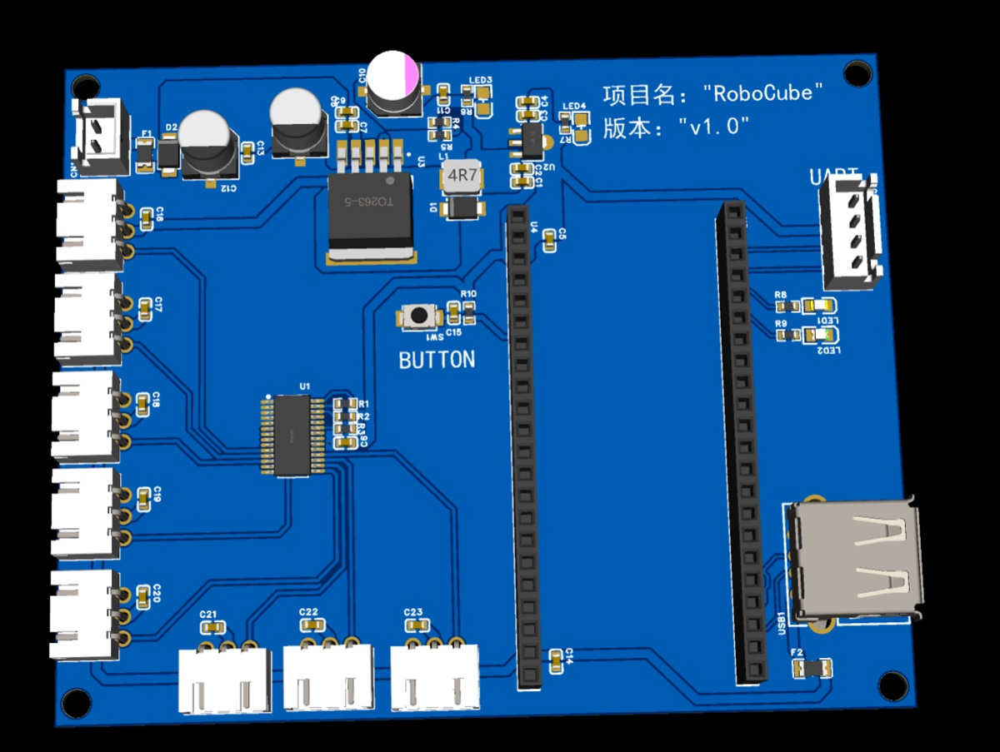

Dual-Arm Robotic Rubik's Cube Solver
Two grippers. Six faces.
A tabletop robot scans a scrambled Rubik's cube, solves it, and turns the layers itself. Its two grippers can reach only two of the cube's six layers, so it rolls the whole cube to bring each next layer into reach.
1000/1000
random scrambles solved by the controller in simulation
21
face turns in the median Kociemba solution
23
whole-cube rolls the arms add to the median solve
~2 min
for the real robot's full solve, scan included
The constraint
Only two of the six layers are in reach at a time.
The robot holds the cube corner-down between two grippers fixed to the frame. Each gripper can turn only the layer behind the edge it clamps, so most moves start by rolling the whole cube to bring the right layer into reach.

How a gripper reaches a layer. Each gripper clamps the middle piece of one lower edge, shown in blue. What happens next depends on the other gripper.
- Layer turn
- Both grippers hold and one wrist turns 90°. The nine-piece layer behind that edge turns.
- Roll
- One gripper opens and the other turns. The whole cube rolls a quarter turn.
Interactive replay
Every roll, clamp and turn is planned in simulation first.
This is a recording of the MuJoCo model running the robot's controller, played back in your browser with the real CAD meshes. The packet list beside it is exactly what would be sent to the Arduino at that moment.
Packets to the Arduino0
The model is built from the team's CAD assembly, with the arms reduced to the same four motors the real rig has: a wrist and a clamp on each side. Playback runs at 60 controller steps per second at 1×; it shows the order and geometry of motions, not the real rig's timing. Each "Scan and solve" recording starts from a random 20-move scramble, runs the same five-pose scan as the robot, reads the state, and solves it.
Rendered in MuJoCo
R U R' U', the first thing we ran end to end. Four face turns become 68 packets: each turn needs one or two rolls first.Results in simulation
1000 random scrambles. 1000 solved.
Each run starts from a random 20-move scramble, which the controller scans, solves and executes. The cube ended solved in every run, so the controller's orientation tracking and roll planning hold up on arbitrary states.
Solution length
Face turns in the Kociemba solution
Quarter turns executed
Half turns run as two quarter turns on the rig
Whole-cube rolls per solve
Extra motions the fixed grippers need
Serial packets per solve
Primitive packets plus the bridge's re-clamps and holds
Show the numbers as a table
Rolls are the cost of fixed grippers. A median solve adds 23 of them to 30 quarter turns, and each roll is a release, a one-handed rotation and a re-clamp. That, not the 14 ms the solver takes, is where the real rig's two minutes per solve go.
Real robot
A fully scrambled cube, solved on the real rig.
Recorded on the integrated rig. The controller and packet stream are the same ones shown above: the five-pose scan, Kociemba, then every roll and layer turn.
What we'd fix next
- Closed-loop motors
- The steppers run open-loop. A lost step is invisible to the software, and from then on its idea of the cube no longer matches the real one; encoders, or a quick re-scan after each move, would catch it.
- Contact
- The simulation assumes each jaw lands on the centre of an edge piece. On the rig, a few millimetres of misalignment can turn the wrong layer, and the printed jaw faces rely on clamping force; grippier pads would tolerate more error.
- Speed
- Every packet waits for the previous one to finish. Starting the next clamp while a rotation settles, and choosing rolls that also shorten later moves, would cut most of the idle time.
- Lighting
- The colour classifier was trained under one lighting setup and hasn't been tested under others.
How it works
From camera to motors, one packet at a time.
Planning runs on a host computer. The rig only executes clamp, release and rotate commands.
Host computer
- USB camera, 1080pExposure and white balance locked; 5 cube poses, 2 faces per pose
- YOLOv8-nano + KNNFind every sticker regardless of colour, then classify colour; sort into a 6×3×3 state
- Kociemba two-phase solverSingmaster move string, about 21 face turns
- Dual-arm controller in MuJoCoTracks cube orientation, plans rolls, runs a per-move state machine, emits primitive packets
USB serialone JSON line per packet, then wait for DONE
Rig
- Arduino Nano EveryParses each packet, steps all four axes together, replies DONE or ERR
- 4 × HPD322 stepper driversStep / direction inputs, full-step mode
- 4 × NEMA-17 steppersPer arm: a wrist motor that turns the gripper, a clamp motor that opens and closes it
- 3D-printed dual-arm frameInverted-V cradle; the cube sits corner-down between the grippers
Reading the cube
The camera's auto-exposure and auto-white-balance are switched off at start-up, so colours don't shift when the white arms move through the frame. The scan rolls the cube through five poses, each showing two faces; the ten face views are sorted by position into rows and columns and fused into the 6×3×3 state the solver needs.


Rolling to reach a layer
With the grippers fixed to the frame, only two of the six layers are within reach at any time. The controller keeps a 3×3 integer matrix from the machine frame to the cube's own frame and updates it after every roll. For each requested move it searches breadth-first over sequences of single-gripper rolls for the shortest one that brings the target layer into a gripper's slot, picking whichever arm needs fewer rolls. Half turns run as two quarter turns, because the wrist only travels ±90°.
Each move runs through the same six steps.
- ParseRead the next Singmaster token, e.g.
R'. - MapConvert it to an axis, a layer and a direction in the cube's frame.
- Choose an armThe one whose slot needs fewer rolls to reach that layer.
- Roll if neededOne gripper holds and turns; the other opens, then re-clamps.
- Turn the layerBoth grippers hold; the active wrist turns 90°.
- ResetRelease the active gripper, return its wrist to neutral, clamp both again.
Primitive packets
The interface between the planner and the rig is deliberately small: an ordered list of four kinds of command. The simulation never streams poses or trajectories; whatever the controller decides is written down as these packets, and the same list drives the real motors.
| Op | Fields | What the rig does |
|---|---|---|
| CLAMP | side | Close one gripper. |
| RELEASE | side | Open one gripper. Refused unless the other gripper is closed, so the cube is never dropped. |
| DUAL_HOLD | none | Both grippers closed; the safe resting state between moves. |
| ROTATE | side, angle | Drive one wrist to −90°, 0° or +90°. With the other gripper open this rolls the cube; with both closed it turns a layer. |
On the wire, the host sends each packet as one line of JSON carrying both grippers' target state, and blocks until the Arduino answers DONE:
{"L":{"state":1,"angle":1.5708,"action":"ROTATE"},
"R":{"state":0,"angle":0.0,"action":"HOLD"},
"t_ms":400} // → "DONE"
Two additions came from running the real rig. Stepper clamps slowly lose grip under load, so after each return to a dual hold the bridge sends a short RECLAMP that presses both jaws inward again. And after a release leaves the cube in one gripper, it waits 300 ms while the holding side keeps creeping inward before the next rotation starts.
Side work: a servo-control board
Zhuoyang also designed a two-layer servo-control board: a PCA9685 16-channel PWM driver on I²C, an XL4015 buck stage for a 5 V servo rail, an AMS1117 3.3 V logic rail, a fused and diode-protected input, and separate servo and logic grounds. Both rails and all 16 PWM channels were verified on the bench.
The final rig switched to stepper motors driven from an Arduino Nano Every, so this board is not part of the system shown above.

Team
Built by four ECE 445 students.
Simulation, the dual-arm controller and its state machine, the packet format, and the Arduino–MuJoCo bridge.
Yiming Xu
Perception: camera setup, the YOLOv8 + KNN pipeline, and assembling the cube state.
Rong Wang
Mechanical design and assembly of the dual-arm frame, the stepper drive, and the camera mount.
Zhuoyang Shen
Electronics, including the servo-control board.
BibTeX
@misc{huang2026cubesolver,
title = {Dual-Arm Robotic Rubik's Cube Solver},
author = {Huang, Qixuan and Xu, Yiming and Wang, Rong and Shen, Zhuoyang},
year = {2026},
note = {ECE 445 Senior Design Project, University of Illinois Urbana-Champaign}
}